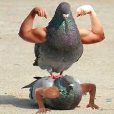
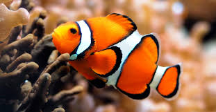
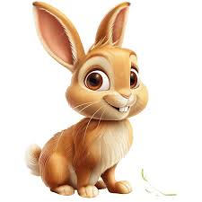

Tipos de Mascotas
Las mascotas forman parte de nuestra familia. Aquí algunos tipos:
- 🐶 Perros: Fieles, juguetones y protectores.
- 🐱 Gatos: Independientes, curiosos y amorosos.
- 🐦 Aves: Coloridas, alegres y algunas pueden hablar.
- 🐠 Peces: Tranquilos, decorativos y fáciles de cuidar.
- 🐰 Conejos: Tiernos, suaves y sociables.
Galería de Mascotas


